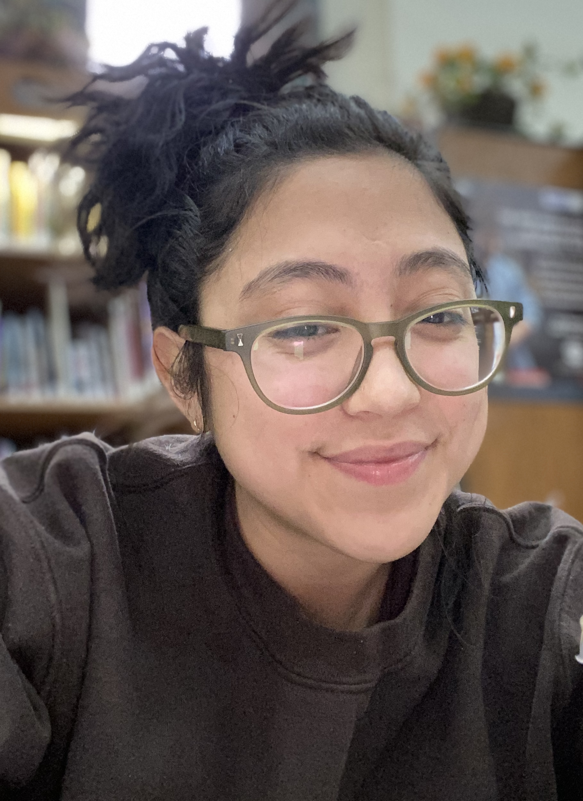
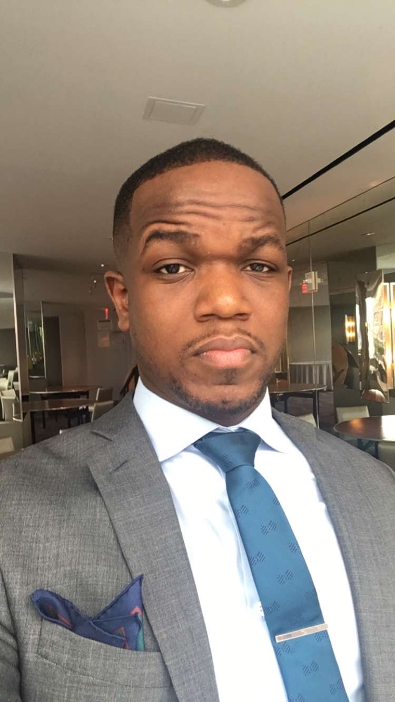
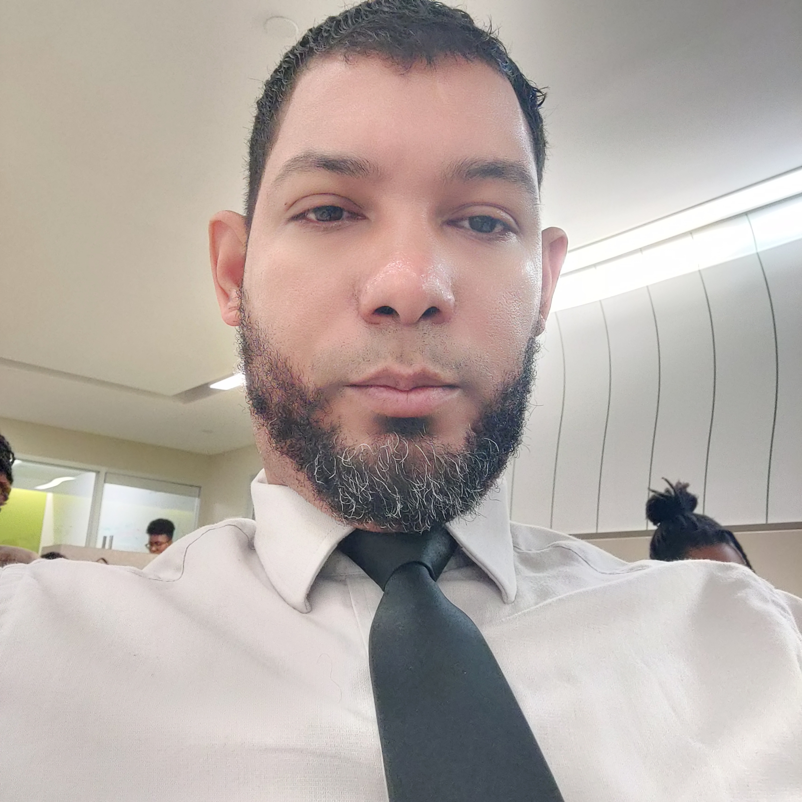

4Tech is an innovative company that works on providing technology to local businesses in the Tri-State area. Some notable companies include: Accenture, PeopleShores and SONY Music Group.

Marlie is an artist turned techie from Brooklyn, NY. Prior to 4Tech, their work consisted of music production and artist management. While working in the music industry, Marlie noticed the lack of technology in the spaces around them. From there, an idea bloomed and they set to work with Julio, Ismail & Edwin to fill the gap.
Julio is a Software Developer from the Bronx, NY. He worked as a driver for many years before deciding to transition into a tech career. Julio's passion and drive to bring technology to improve the spaces around him.

Ismail's transition from a decade in hospitality to a junior web developer at 4Tech. With a strong project management background, Ismail brings a blend of organizational skills and technical expertise to our team. His journey reflects his commitment to growth and innovation, making him an invaluable asset in driving our projects forward with precision and enthusiasm.

Edwin is a Software Developer from the Bronx, NY. Experienced in data management focused on survey processing. He is skilled in data entry system development in CSPro.